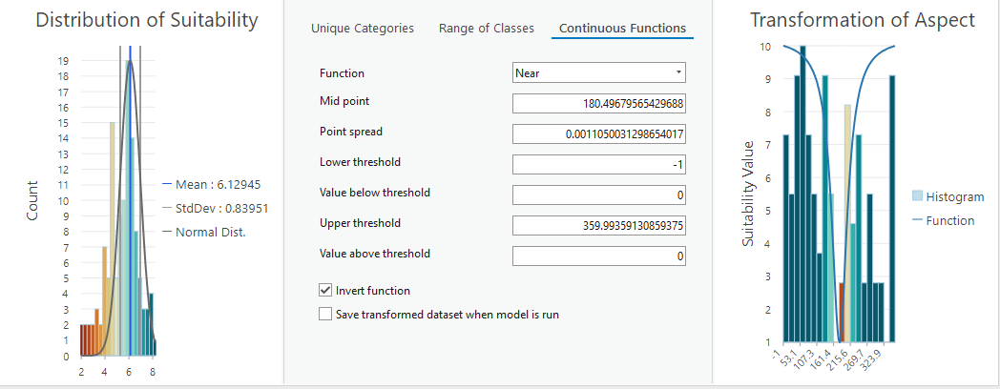
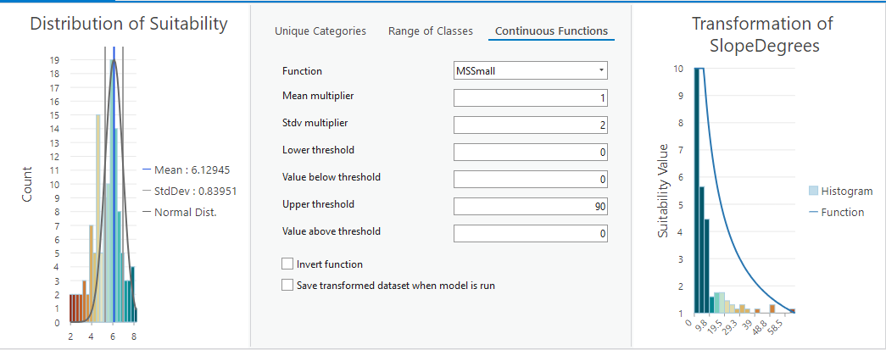
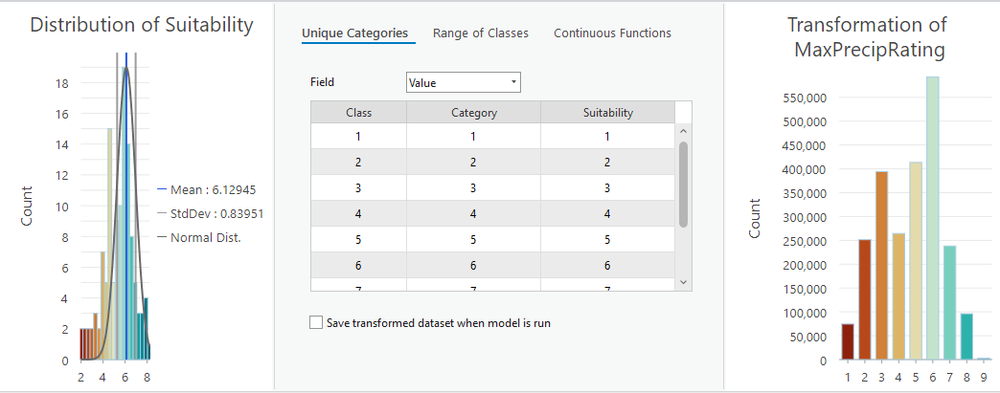
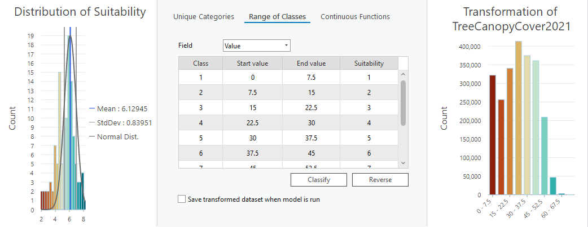
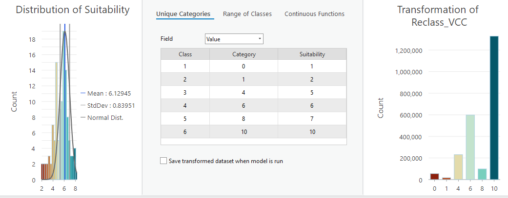
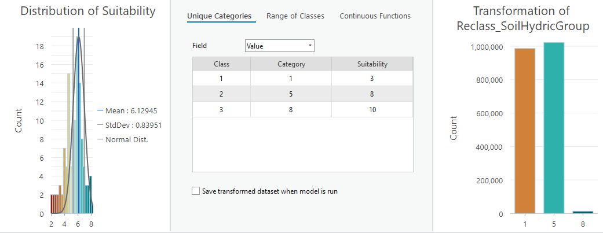
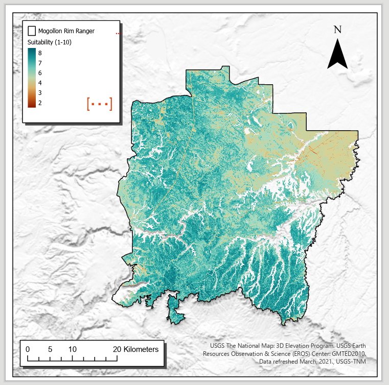

Mapping landscape suitability for forest thinning to reduce evapotranspiration and enhance groundwater recharge in Arizona
![]()
suitability mapping, forest thinning, water yield, groundwater recharge
1 Introduction
Since 2000, the Colorado River Basin has been in the midst of a historic drought (Meko, Woodhouse, and Winitsky 2022; Williams, Cook, and Smerdon 2022). Average temperatures increased by 0.9ºC from 2000 - 2014, and streamflow in the Colorado River has declined by 19% below the 1906-1999 average (Hogan and Lundquist 2024; Udall and Overpeck 2017). Extreme hydroclimate events such as droughts, heatwaves, and floods have more than doubled in frequency since 2010 (Bennett, Talsma, and Boero 2021). Simultaneously, Arizona has experienced rapid population growth, increasing the demands on already strained water supplies. Reductions in streamflow have increased reliance on groundwater pumping, while groundwater levels have declined for decades in much of the state (Tadych et al. 2024). Average annual precipitation in the Lower Colorado River Basin is about 330mm, and only about 10mm of that precipitation becomes streamflow while much of the rest is lost to Evapotranspiration (Zou, Ffolliott, and Wine 2010). Sublimation has been shown to remove 10 - 90% of snowfall in the basin; the remaining snowmelt provides over 80% of streamflow to the Colorado River (Lundquist et al. 2024). Therefore, small reductions in evaporative losses could have out-sized impacts on available water supplies (Hibbert 1979).
Over 90% of annual precipitation in semi-arid forests can be lost to evapotranspiration (Dore et al. 2012; Ha et al. 2015; Yaseef et al. 2010; Hibbert 1979). Around 65% of surface water in the western states originates from forested lands, which cover just 29% of the land area (Brown, Hobbins, and Ramirez 2005). However, western forests are increasingly at risk from catastrophic wildfires, an emerging driver of runoff change that will increase the impact on the water supply (Williams, Cook, and Smerdon 2022). Forest structure has changed significantly post-Euro-American settlement due to grazing, logging, wildfire exclusion, and other factors (Covington and Moore 1994; Friederici 2013). As a result, many forests in Arizona are overstocked relative to pre-settlement conditions, increasing the risk of catastrophic wildfire (Allen et al. 2002). Rising temperatures and related droughts have contributed to extensive tree mortality from wildfire, disease, and insect infestation (Berner et al. 2017). Warming temperatures have tripled the frequency and quadrupled the size of wildfires in recent decades (Williams, Cook, and Smerdon 2022). Increasing heat has pushed many low-elevation conifer forests past climate thresholds, creating conditions less suitable for tree regeneration (Davis et al. 2019).
Landscape-scale forest restoration efforts have been planned or implemented across much of Arizona. For example, the Four Forest Restoration Initiative (4FRI) includes plans for restoration across over 2.5 million acres of Arizona’s forests (Schultz, Jedd, and Beam 2012). The primary goal of restoration efforts is to reduce wildfire risk (Allen et al. 2002; Friederici 2013). However, numerous studies have linked forest treatments to increased water yields in semi-arid forests and have emphasized the role of forest restoration in improving hydrologic services and increasing water availability (Bosch and Hewlett 1982; Baker 1986; Gottfried 1991; Smerdon, Redding, and Beckers 2009; Zou, Ffolliott, and Wine 2010; C. J. W. Wyatt 2013; Moreno et al. 2015; Simonit et al. 2015; C. Wyatt, O’Donnell, and Abraham E. Springer 2015; O’Donnell et al. 2018; Schenk et al. 2020; Hibbert 1979). Forest treatments such as thinning and burning can significantly impact the hydrologic cycle of forests (Del Campo et al. 2022). For example, forest thinning in Arizona has been associated with increased snow cover days (Sankey et al. 2015; Belmonte et al. 2021; Donager et al. 2021), greater soil moisture (Belmonte et al. 2022; Sankey and Tatum 2022), and greater forest canopy moisture (Sankey et al. 2021). However, the response of forests to treatments is complex and non-linear and differs across forest types, with treatment level, and along aspect and elevational gradients (Del Campo et al. 2022; Biederman et al. 2022a; Zou, Ffolliott, and Wine 2010; Hibbert 1979; Moore and Wondzell 2005). Water yield can decrease with reductions in forest cover in drier forests with little topographic shading or SW aspects due to increased water use by remaining vegetation and increased snow sublimation and evaporation(Biederman et al. 2015). This research aims to develop criteria for areas suitable for thinning to enhance groundwater recharge. It focuses primarily on regional studies, to determine suitability criteria, which are likely the best predictor of hydrologic response to treatment (C. J. W. Wyatt 2013).
1.1 Regional Hydrologic Responses to Treatment
Several regional studies link forest treatment to changes in stand-level ecohydrology, including increased tree growth in Ponderosa Pines (Rodman et al., 2024),
1.1.1 Water Yield/Runoff
Several regional studies link forest treatment to increased streamflow (Dwivedi et al. 2024; Biederman et al. 2022a; Broxton et al. 2023). However, there appears to be a threshold response, with water yield increasing only in treated forests receiving over 500mm of annual precipitation or in snow-dominated forests (Biederman et al. 2022a; Carroll et al. 2016; Adams et al. 2012; Zou, Ffolliott, and Wine 2010; Hibbert 1979).
1.1.2 Soil Moisture and Drought Resilience
A synthesis of several treatment types across Northern Arizona, including thinning at various levels and prescribed burning, found that treated sites had significantly greater total ecosystem moisture, making forests more resilient to drought(Sankey et al. 2021; Sankey and Tatum 2022). Treatments were shown to increase tree growth, improving resilience to drought in Ponderosa Pine forests (Rodman et al., 2024). Thinned Ponderosa Pine forests have higher soil moisture for two to eight years post-thinning, a result also found in semi-arid forests around the Mediterranean (Belmonte et al. 2022; Del Campo et al. 2022, 2019; O’Donnell et al. 2021).
1.1.3 Justification
regional studies are the best predictor of hydrologic response to thinning in Arizona forests (C. J. W. Wyatt 2013)
A snythesis of all 4FRI treatments found that thinned and burned forests have signifiantly greater total ecosystem moisture and are thus more resilient to drought and wildfire (Sankey et al. 2021)
Thinned forests are better buffered against drought impacts in terms of both soil moisture and tree health (Sankey and Tatum 2022).
Soil moisture and ET may be affected by thinning for 3.6 - 8.6 years (Del Campo et al. 2022).
Prescribed burning or thinning can increase tree growth, improving resilience to drought in ponderosa pine forests (Rodman et al., 2024)
Thinned forests (around Flagstaff) have higher soil moisture at 25 and 50cm in the first two years post-thinning (Belmonte et al. 2022).
Thinning in semi-arid forests around the Mediterranean increased antecedent soil moisture and below ground hydrologic processes and increased deep soil moisture by 50mm/year over the control (Del Campo et al. 2019).
a review of 35 studies published from 1971 to 2018 found that thinning was more effective than clear-cutting in terms of increasing groundwater recharge due to reduced sublimation and evaporation. Springs can effectively monitor groundwater recharge effects in arid lands (Schenk et al. 2020).
A review of studies on forest mgmt effects on groundwater resources found that a rise in the water table can generally be expected following forest thinning in all forested landscapes (Smerdon, Redding, and Beckers 2009).
1.1.3.1 Snow retention
The effects of forest thinning and subsequent snowmelt are highly variable, with responses depending on forest structure and local climate, where thinning in dense and taller vegetation generally increases snow retention, thinning in shorter, less dense forests may decrease retention (Lewis et al. 2023).
In semi-arid forested watersheds, thinning can influence streamflow variability by modifying snowpack accumulation and melt, particularly in wetter years where thinning can either reduce or increase snow retention based on site-specific conditions.(Broxton et al. 2023).
Thinning in semi-arid forested watersheds can significantly impact streamflow by altering snowmelt timing, with reduced forest cover tending to delay snowmelt at warmer sites while advancing melt at cooler, snowpack-persistent sites (Dwivedi et al. 2024).
Thinned forests around Flagstaff have greater snow persistence at 25%-35% canopy cover (Belmonte et al. 2021)
Thinned forests in Northern Arizona have more snow and soil moisture (O’Donnell et al. 2021)
Found that thinned and burned vs. control forests had varying rates of snowmelt and snow persistence. Canopy cover is most predictive of snow persistence (Donager et al. 2021).
1.1.3.2 Thresholds in literature
A review of 94 catchment studies showed that significant changes in water yield are correlated to forest growth in forests that receive 600-1200 mm of mean annual precipitation Bosch and Hewlett, 1982 The caveat being there were not many coniferous forests studies in that precipitation range (Bosch and Hewlett 1982).
(Adams et al. 2012) hypothesized that where annual precipitation exceeds ~500 mm or water yield is dominated by snowmelt, watershed will experience significantly decreased evapotranspiration and increased flows if canopy cover is reduced by over 20%. However, their recent observations suggest that in dry forests, water yield may decrease. More research is needed. This paper was focused on tree-die off not thinning.
(Carroll et al. 2016) found a threshold hydrologic response when evaluating the thinning of a snow-dominated semi-arid Pinyon-Juniper community in the Great Basin. They found that a positive water yield in thinned plots was only observed when precipitation exceeded 400mm annually (wet years)
(Biederman et al. 2022a) suggests that disturbance will positively impact streamflow for a minimum of several years following disturbance in areas where mean annual precipitation exceeds ~500mm. “Presumably because below 500 mm, most precipitation is evaporated regardless of forest condition (Hibbert, 1979)[@]
(Zhang, Dawes, and Walker 2001) evaluated 250 worldwide catchment studies and found that the differences in ET between forested and non-forested catchments diminish in areas with annual rainfall less than 500 mm
1.1.4 thinning decreases ET in some circumstances
Reductions of canopy cover can increase ET of existing trees, and solar radiation increases ET @biederman_recent_2015
Decreases in post-disturbance ET may be offset by increased soil evaporation, increasing net ET (Reed et al., 2016)
(Goeking and Tarboton 2020) reviewed the hydrologic response of stand-replacing and non-stand-replacing disturbances and found that post-disturbance streamflow may increase, not change, or even decrease. Non-stand replacing fires—because of increased evaporation from higher sub-canopy radiation and increased transpiration from rapid post-disturbance growth can reduce water availability in some cases.
1.2 Data & Methods
1.2.1 Weighted Suitability Workflow
1.2.1.1 Define
“define the goal, supporting criteria, and evaluation metrics for the weighted suitability model.”
Here we define the goal of this suitability map–to locate areas on the Mogollon Rim Ranger District in the Coconino National Forest where thinning may increase groundwater recharge based on modeling of criteria found in the literature quantifying the impact of thinning on water yield in Regional studies of Semi-arid forests.
1.2.1.2 Suitability Criteria
1.2.1.2.1 Aspect
Aspect has a large impact on solar radiation.
Closer to 0 or 360 is desired, low suitability scores for closeness

1.2.1.2.2 Slope
Higher slopes are less suitable because thinning is both more expensive, and more precipitation will end up as runoff.
Lower slopes have higher suitability scores

1.2.1.2.3 Elevation
Water yield in lower elevation watersheds will be less responsive to changes in forest structure due to asynchrony between snowmelt and transpiration (Biederman et al. 2022b)
Winter precipitation mainly falls as snow at elevations above 1800m in Arizona (Friederici 2013)
1.2.1.2.4 Precipitation
Ideal: Mean annual precipitation must be higher than 500mm 1990 - 2020
Marginal: (benefits only expected in wet years or during some events) Max precipitation higher than 500mm but Mean annual precipitation < 500mm
Unsuitable: Max annual precipitation < 500mm

1.2.1.2.5 Vegetation Characteristics
Higher vegetation density, when thinned, will yield more water, so focus on areas of high vegetation density and high departure from historic conditions.
NLCD 2021 Total Canopy Cover (% Cover)
Canopy cover % below 30 were considered low suitability (1) while increases in canopy cover about 30% increase in suitability.

Landfire 2022 Vegetation Condition Class 3rd update to the 2016 remap.
Variation from modeled historic conditions. Forests that have deviated significantly from their modeled historic conditions are more suitable for thinning than forests that have not deviated from their historic condition.
Vegetation Condition Class (VCC) represents a simple categorization of the associated Vegetation Departure (VDep) and is a derivative of the VDep layer. It indicates the general level to which current vegetation differs from the estimated modeled vegetation based on past reference conditions. VDep and VCC are based upon methods originally described in the Inter-agency Fire Regime Condition Class Guidebook but are not identical to those methods. They should not be considered as a replacement data set. Full descriptions of the techniques used can be found in the VDep product description. Note that the LANDFIRE (LF) team feels it is very important for users to review the VDep methods before comparing VDep or VCC values across LF versions. info PDF

1.2.1.2.6 Soil Hydrologic Conditions
Soil types A,B,C,D are mapped for the USA, There are no A soil types in the study area, so they were given the following suitability values
B = 10 out of 10 C = 8 out of 10 D = 3 out of 10

1.3 Preliminary Results
1.3.1 Weighting
Tree Canopy Cover = 20% Vegetation Condition Class = 20% Slope = 20% Aspect = 20% Max Precipitation = 15% Soil Hydrologic Group = 5%
1.3.2 Overall Suitability

1.4 Acknowledgments
Phasellus interdum tincidunt ex, a euismod massa pulvinar at. Ut fringilla ut nisi nec volutpat. Morbi imperdiet congue tincidunt. Vivamus eget rutrum purus. Etiam et pretium justo. Donec et egestas sem. Donec molestie ex sit amet viverra egestas. Nullam justo nulla, fringilla at iaculis in, posuere non mauris. Ut eget imperdiet elit.
1.5 Open research
Phasellus interdum tincidunt ex, a euismod massa pulvinar at. Ut fringilla ut nisi nec volutpat. Morbi imperdiet congue tincidunt. Vivamus eget rutrum purus. Etiam et pretium justo. Donec et egestas sem. Donec molestie ex sit amet viverra egestas. Nullam justo nulla, fringilla at iaculis in, posuere non mauris. Ut eget imperdiet elit.
References
Citation
@online{e_lima2024,
author = {E Lima, Ryan and Tsagaan Sankey, Temuulen and E Springer,
Abraham},
title = {Mapping Landscape Suitability for Forest Thinning to Reduce
Evapotranspiration and Enhance Groundwater Recharge in {Arizona}},
date = {2024-10-30},
langid = {en},
abstract = {Here, we review the literature on the effects of forest
thinning on water yield throughout Arizona and map areas where
mechanical treatment has the highest potential for increasing
groundwater recharge. This research synthesizes the myriad studies
examining the effects of forest treatment on water ield in semi-arid
forests and compiles a list of relevant variables. Our approach
combines thematic maps of average precipitation, elevation, slope,
aspect, forest type, forest density, depth to bedrock, and soil type
into a GIS suitability model to highlight areas where forest
treatment will most likely enhance recharge statewide.}
}